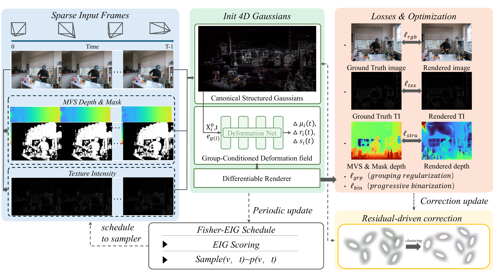

SGS-4DGS: Sparse-View Stable 4D Gaussian Splatting with Structured Motion Grouping
Project page for double-blind review
Abstract
Reconstructing dynamic scenes from sparse multi-view videos remains challenging, as limited viewpoints severely under-constrain 4D geometry and often lead to unstable motion estimation and geometric collapse. We present SGS-4DGS, a sparsity-oriented 4D Gaussian splatting framework that improves spatiotemporal stability by explicitly modeling coherent motion structure and by leveraging reliable auxiliary cues.
Our method maintains a canonical Gaussian set and introduces structure-aware grouping to organize primitives into coherent motion units. Conditioned on time and group descriptors, a group-conditioned deformation model generates time-varying Gaussians with reduced deformation ambiguity, while preserving local flexibility via lightweight residual updates. To further stabilize geometry and retain fine structures under sparse supervision, we incorporate reliability-filtered MVS depth and texture-intensity cues into sparsity-aware objectives.
Beyond the representation and supervision design, we propose a Fisher-guided view–time scheduler that prioritizes informative observations during training, together with a residual-driven correction strategy that identifies persistent high-error regions and applies targeted updates to recover missing or unstable structures. Experiments on standard sparse-view dynamic benchmarks demonstrate that SGS-4DGS produces more stable 4D geometry and higher-fidelity novel-view synthesis than recent dynamic Gaussian splatting baselines, while retaining the efficiency of differentiable Gaussian rendering.
Method Overview

Results
We report sparse-view metrics separately on N3D and Techni. Select a summary below to switch across 2-view, 3-view, and 4-view settings for each dataset.
Gold outlines mark the best method in each metric panel, and blue value tags call out SGS-4DGS.
Visual Comparisons
Image comparisons on the Cook Spinach scene using 2, 3, and 4 input views. Use the arrows to select a baseline; SGS-4DGS appears on the left of the movable divider and the selected baseline appears on the right.